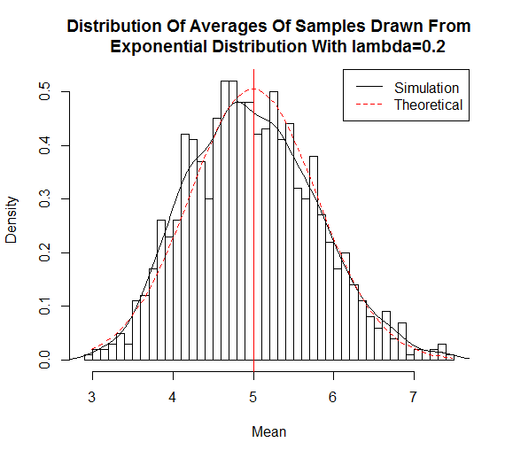
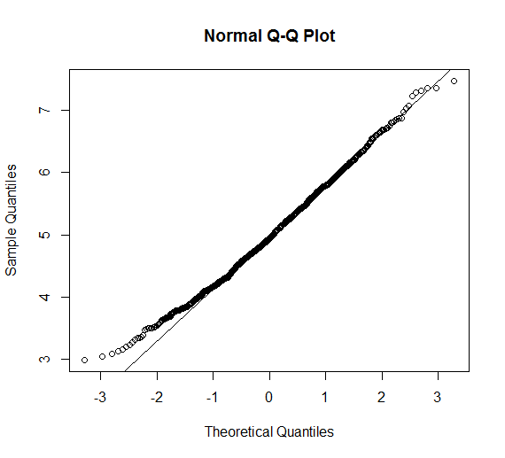
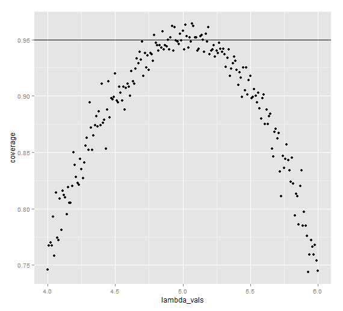

In this project I will investigate the exponential distribution in R and compare it with the Central Limit Theorem. The exponential distribution can be simulated in R with rexp(n, lambda) where lambda is the rate parameter. The mean of exponential distribution is 1/lambda and the standard deviation is also 1/lambda. I will set lambda = 0.2 for all of the simulations. I will investigate the distribution of averages of 40 exponentials. Note that I will need to do a thousand simulations.
# First we will set the seed set.seed(3) # we set the required constants to the corresponding values lambda <- 0.2 num_sim <- 1000 sample_size <- 40 sim <- matrix(rexp(num_sim*sample_size, rate=lambda), num_sim, sample_size) row_means <- rowMeans(sim)
The distribution of sample means are
# plot the histogram of averages
hist(row_means, breaks=50, prob=TRUE,
main="Distribution Of Averages Of Samples Drawn From
Exponential Distribution With lambda=0.2",
xlab="Mean")
# Density of the averages of samples
lines(density(row_means))
# Theoretical center of distribution
abline(v=1/lambda, col="red")
# Theoretical density of the averages of samples
xfit <- seq(min(row_means), max(row_means), length=100)
yfit <- dnorm(xfit, mean=1/lambda, sd=(1/lambda/sqrt(sample_size)))
lines(xfit, yfit, pch=22, col="red", lty=2)
# Add legend
legend('topright', c("Simulation", "Theoretical"), lty=c(1,2), col=c("black", "red"))

Due to the central limit theorem, the averages of samples follow normal distribution. The figure above also shows the density computed using the histogram and the normal density plotted with theoretical mean and variance values. Also, the q-q plot below suggests the normality.
qqnorm(row_means); qqline(row_means)

Let's evaluate the coverage of the confidence interval for $1/\lambda = \bar{X} \pm 1.96 \frac{S}{\sqrt{n}}$
lambda_vals <- seq(4, 6, by=0.01)
coverage <- sapply(lambda_vals, function(lamb) {
mu_hats <- rowMeans(matrix(rexp(sample_size*num_sim, rate=0.2),
num_sim, sample_size))
ll <- mu_hats - qnorm(0.975) * sqrt(1/lambda**2/sample_size)
ul <- mu_hats + qnorm(0.975) * sqrt(1/lambda**2/sample_size)
mean(ll < lamb & ul > lamb)
})

The 95% confidence intervals for the rate parameter ($\lambda$) to be estimated ($\hat{\lambda}$) are $\hat{\lambda}{low} = \hat{\lambda}(1 - \frac{1.96}{\sqrt{n}})$ and $\hat{\lambda}{upp} = \hat{\lambda}(1 + \frac{1.96}{\sqrt{n}})$. As can be seen from the plot above, for selection of $\hat{\lambda}$ around 5, the average of the sample mean falls within the confidence interval at least 95% of the time. Note that the true rate, $\lambda$ is 5.